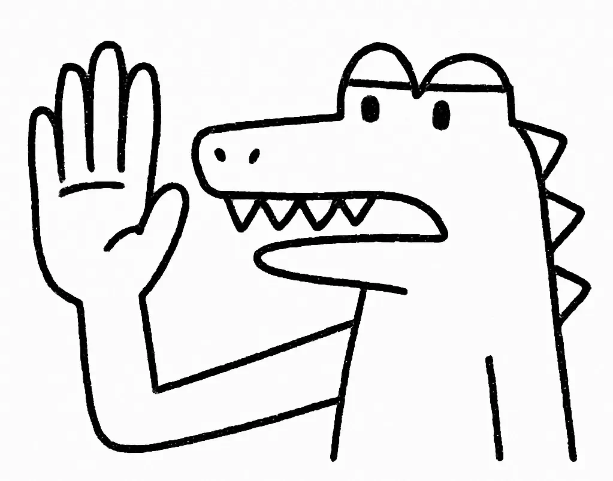

촘피라는 악어는 자신이 가장 좋아하는 햇볕에 따뜻하게 데워진 석회암 바위 위에 혼자 앉아 있었다. 그 바위에는 그의 꼬리가 딱 맞는 특이한 하트 모양 움푹한 곳이 있었다. 이 자리에서 그는 머디 워터스 늪의 분주한 활동을 지켜보고 있었다. 은빛 미노우들이 부들 사이를 재빠르게 헤엄치고, 빨간날개검은새들이 머리 위에서 지저귀고, 껍데기가 금간 세발가락 거북들이 이끼로 덮인 통나무 위에서 일광욕을 즐기고 있었다—모두가 친구들과 함께 이 특별한 화요일 아침을 즐기고 있었다. 촘피를 제외하고는 말이다.
[Chompy the crocodile sat alone on his favorite sun-warmed limestone rock, the one with the peculiar heart-shaped depression that fit his tail perfectly. From this perch, he watched the bustling activity of Muddy Waters Swamp. Silvery minnows darted through the cattail reeds, red-winged blackbirds chattered overhead, and three-toed turtles with chipped shells sunbathed on moss-covered logs—everyone enjoying this particular Tuesday morning with friends. Everyone except Chompy.]
“안녕하세요!” 그는 왼쪽 다리가 약간 휘어진 지나가는 플라밍고에게 자신이 생각하기에 가장 친근한 미소를 지으며 인사했다. 그 새는 촘피의 인상적인 누런 삼각형 이빨들을 한 번 보더니 황급히 연어빛 핑크 깃털을 휘날리며 도망쳤고, 탁한 연못 표면에 기수 물방울들을 튀겨댔다.
[“Good morning!” he called to a passing flamingo with a slightly crooked left leg, flashing what he thought was his friendliest smile. The bird took one look at Chompy’s impressive row of yellowed triangular teeth and fled in a frantic flurry of salmon-pink feathers, sending droplets of brackish water spraying across the surface of the murky pond.]
촘피의 가시가 돋친 꼬리가 축 늘어졌고, 등의 돌기들도 실망으로 납작해졌다. 매번 이런 일이 일어났다. 어머니는 항상 그가 아버지의 미소를 닮았다고 하셨다—들쭉날쭉한 마흔두 개 이빨 모두도—한때는 그의 청소년기 마음을 자부심으로 가득 채웠던 칭찬이었지만, 이제는 그의 성인이 된 마음을 짓누르는 20파운드짜리 돌덩이처럼 느껴졌다.
[Chompy’s spiky tail drooped, the ridges along his back flattening in disappointment. This happened every single time. His mother always said he had his father’s smile—all forty-two jagged teeth of it—a compliment that had once filled his adolescent heart with pride but now felt like a twenty-pound stone weighing down his adult spirits.]
“아마 나는 혼자일 운명인지도 몰라.” 그는 한숨을 쉬며 꼬리로 물을 탁 치고는 동심원 모양의 물결이 그의 들리지 않는 인사처럼 바깥쪽으로 퍼져나가 연못 가장자리의 수련잎 덤불 속으로 사라지는 것을 지켜봤다.
[“Perhaps I’m destined to be alone,” he sighed, slapping his tail against the water and watching concentric ripples spread outward like his unheard greetings, disappearing into the tangle of lily pads at the pond’s edge.]
“이 좋은 아침에 또 혼잣말하고 있나?” 아래에서 목소리가 물거품과 함께 올라왔고, 특유의 공기방울 터지는 소리가 뒤따랐다. 버블즈라는 나이가 들어 하얗게 변하고 끝이 물음표처럼 말린 훌륭한 수염을 가진 고대의 메기가 수면으로 올라왔는데, 그의 왼쪽 눈은 백내장으로 뿌옇게 흐려져 있었다.
[“Talking to yourself again on this fine morning?” A voice bubbled up from below, punctuated by the distinctive pop of air bubbles. Bubbles, an ancient catfish with magnificent whiskers that had turned white with age and curled at the tips like question marks, rose to the surface, his left eye clouded with cataracts.]
“아무도 내 친구가 되고 싶어하지 않아.” 촘피가 설명했는데, 어제의 워터 히아신스가 아직 어금니 사이에 끼어 있었다. “친절하게 대하려고 하는데, 그들은 그냥…” 그는 자신의 입을 가리키며 손짓했고, 실수로 보라색 꽃 조각을 떨어뜨렸다.
[“Nobody wants to be my friend,” Chompy explained, a hint of yesterday’s water hyacinth still stuck between his back molars. “I try to be nice, but they just see…” He gestured to his mouth, accidentally dislodging the purple flower fragment.]
버블즈는 사려 깊게 원을 그리며 헤엄쳤고, 그의 수염이 떠다니는 좀개구리밥을 가두는 작은 소용돌이를 만들었다. “있잖아, 촘피, 내가 몇 년 동안 네가 같은 방식으로 시도하는 걸 지켜봤는데 말이야. 네 미소가—아무리 훌륭하다 해도—첫인상으로는 좀… 부담스러울 수 있다는 생각을 해본 적 있니?”
[Bubbles circled thoughtfully, his whiskers creating tiny whirlpools that trapped floating duckweed. “You know, Chompy, I’ve been watching you try the same approach for years now. Have you considered that your smile—magnificent as it is—might be a bit… overwhelming as a first impression?”]
“그럼 어떻게 내가 친근하다는 걸 보여주지? 전에 손을 흔들어본 적도 있는데, 항상 동시에 미소를 짓게 되더라고, 그때 그들이 도망가는 거야.”
[“But how else do I show I’m friendly? I’ve tried waving before, but I always end up smiling at the same time, and that’s when they run.”]
“이 특별한 물에서 구십칠 년을 살면서,” 버블즈가 나이 든 특유의 거친 목소리로 말했다, “타이밍에 대해 한 가지 배운 게 있어. 먼저 오른손을 들어 인사하되—기다려. 미소를 짓기 전에 그들이 너의 평화로운 의도를 볼 기회를 줘. 한 번에 한 걸음씩 너에게 익숙해지도록 해.”
[“In my ninety-seven years in these particular waters,” Bubbles said, his voice carrying the distinctive rasp of age, “I’ve learned something about timing. Try raising your right hand in greeting first—and wait. Give them a chance to see your peaceful intentions before you smile. Let them get used to you one step at a time.”]
다음 날 아침, 갈대 사이 거미줄에 이슬이 아직 맺혀 있을 때, 촘피는 릴리를 발견했다. 꼬리깃털 하나가 살짝 구부러진 작은 노란 새로 최근 북쪽 습지에서 온 아이였다. 그녀는 특정한 나뭇가지들인 구부러지는 버드나무 가지만을 그의 바위 근처에서 모으고 있었고, 그가 모르는 세 음계의 선율을 흥얼거리고 있었다. 그의 마음이 기대와 희망으로 빨라졌고, 등의 돌기들이 빠르게 오르락내리락했다. 버블즈의 조언을 기억하며, 그는 천천히 오른손을 들어 부드럽게 손을 흔들었고, 그의 짧은 발톱이 비스듬한 아침 햇살에 반짝였다. 이번에는 입을 다물고 있었다.
[The next morning, with dew still clinging to the spiderwebs between the reeds, Chompy spotted Lily, a small yellow bird with one slightly bent tail feather who had recently arrived from the northern marshes. She was gathering specific twigs—only the bendy willow ones—near his rock, humming a three-note tune he didn’t recognize. His heart quickened with anticipation and hope, making the ridges on his back rise and fall rapidly. Remembering Bubbles’ advice, he slowly raised his right hand in a gentle wave, his short claws gleaming in the slanted morning light. This time, he kept his mouth closed.]
릴리는 쪼는 것을 멈추고 정확히 45도 각도로 고개를 기울였다. 그녀는 날아가지 않았다.
[Lily paused mid-peck, tilting her head at precisely forty-five degrees. She didn’t fly away.]
“안-안녕하세요.” 촘피가 부드럽게 말했는데, 여전히 입을 거의 벌리지 않은 채로, 평소 숨겨져 있던 아래 잇몸에 아침 바람이 시원하게 닿는 것을 느끼고 있었다.
[“H-hello,” Chompy said softly, still keeping his mouth barely open, feeling the morning breeze cool against his usually hidden bottom gums.]
“안녕하세요.” 릴리가 조심스럽게 대답하며, 자신의 소중한 버드나무 가지를 더 꽉 쥐었는데, 그 신선한 녹색 껍질이 그녀의 노란 깃털과 대조를 이뤘다. “당신은… 그냥 저에게 손을 흔드는 건가요?”
[“Hello,” Lily replied cautiously, gripping her prized willow twig tighter, its fresh green bark contrasting with her yellow feathers. “Are you… just waving at me?”]
촘피는 조심스럽게 고개를 끄덕였고, 손은 여전히 들고 있었는데, 손바닥이 바깥쪽을 향하고 손가락들이 살짝 벌어져 있었다.
[Chompy nodded carefully, his hand still raised, palm facing outward with fingers slightly spread.]
“악어가 그냥 손만 흔드는 걸 본 적이 없어요.” 그녀가 말하며 정확히 2인치 더 가까이 깡충 뛰었고, 그녀의 작은 발이 진흙에 별 모양 자국을 남겼다. “제가 살던 곳에서는 항상 당신들 종족을 멀리하라고 들었어요. ‘무는 것만 있고 대화는 없다'고 부러진 날개를 가진 할머니가 매일 일출 때마다 꽥꽥거리셨거든요.”
[“I’ve never seen a crocodile just wave before,” she said, hopping exactly two inches closer, her tiny feet leaving star-shaped impressions in the mud. “Where I come from, we were always told to stay far away from your kind. 'All snap and no chat,’ my grandmother with the broken wing would squawk every sunrise.”]
“우리가 다 그런 건 아니에요.” 촘피가 말하며, 마침내 오른쪽 앞니 세 개만 보이는 작은 미소를 지었다.
[“We’re not all like that,” Chompy said, finally allowing himself a tiny smile that revealed just the front three teeth on his right side.]
놀랍게도 릴리는 도망가지 않았다. 대신 그녀는 더 가까이 날아왔는데, 타고난 호기심이 조심스러움을 이겨냈고, 구부러진 꼬리깃털이 빛을 받아 반짝였다. “당신 이빨이 꽤 인상적이네요.” 그녀가 조심스럽게 관찰했다. “번개 맞은 참나무 옆 북쪽에서 자라는 줄무늬 껍질을 가진 단단한 물호두를 까는 데 완벽할 것 같아요.”
[To his amazement, Lily didn’t flee. Instead, she fluttered closer, her natural curiosity overcoming her caution, the bent tail feather catching the light. “Your teeth are quite impressive,” she observed carefully. “I bet they’d be perfect for cracking those tough water nuts with the striped shells that grow on the north side by the lightning-struck oak.”]
“물호두요?” 촘피는 수년간 다른 동물들이 그것에 대해 언급하는 걸 들었지만, 한 번도 주의를 기울인 적이 없었다—항상 낚시에만 집중해서 다른 먹이원을 탐색할 생각을 하지 못했던 것이다.
[“Water nuts?” Chompy had heard other animals mention them over the years, but he’d never paid attention—he’d always been too focused on fishing to explore other food sources.]
“네! 제가 가장 좋아하는 건데, 제 부리로는 너무 단단해요.” 그녀가 설명하며 가느다란 부리로 나뭇가지를 특유의 '똑똑’ 소리를 내며 두드렸다. “며칠 동안 다른 동물들이 그걸로 애먹는 걸 봤어요. 다람쥐들은 영 못 하겠다고 하고, 너구리들은 중간에 포기해버려요. 하지만 당신이라면 그 강한 턱으로 쉽게 깰 수 있을 것 같아요. 한번 해볼래요? 어디서 자라는지 보여드릴게요.”
[“Oh yes! They’re my favorite, but too hard for my beak,” she explained, tapping her slender bill against the twig with a distinctive 'tock-tock’ sound. “I’ve been watching other animals struggle with them for days. The squirrels can’t quite manage, and the raccoons give up halfway. But I bet you could crack them easily with those strong jaws of yours. Want to try some? I could show you where they grow.”]
촘피는 열심히 고개를 끄덕였는데, 너무 세게 끄덕이지 않도록 조심해서 새로운 잠재적 친구를 놀라게 하지 않았고, 갑옷 같은 가슴 아래에서 희망찬 설렘을 느꼈다.
[Chompy nodded eagerly, careful not to nod too vigorously and frighten his new potential friend, feeling a hopeful flutter beneath his armored chest.]
북쪽 연못으로 향하는 길에, 작년 봄에 주머니쥐 올드 버티를 삼켜버린 늪지대를 피해 돌아가면서, 촘피는 비늘로 덮인 등줄기를 따라 떨리는 전율을 느꼈고, 위에서 세 번째 돌기가 눈에 띄게 경련했다. 만약 이게 속임수라면? 만약 다른 동물들이 자신이 다가오는 걸 보고 흩어진다면? 그는 그런 생각들을 밀어내고 릴리의 명랑한 수다에 집중했는데, 그녀는 살짝 앞서 날아가며 가끔 특히 향긋한 목련 꽃송이들 주위를 빙빙 돌며 길을 안내했다.
[As they made their way toward the north pond, stepping around the patch of quicksand that had claimed Old Bertie the possum last spring, Chompy felt a nervous tremor run down his scaly spine, making the third ridge from the top twitch visibly. What if this was a trick? What if the other animals scattered when they saw him approaching? He pushed the thoughts away and focused on Lily’s cheerful chatter as she flew slightly ahead, guiding the way with occasional loops around particularly fragrant magnolia blossoms.]
그날 오후, 촘피는 북쪽 연못가에 있는 자신을 발견했는데, 그곳의 물은 더 짙은 파란색이었고 미네랄 맛이 희미하게 났으며, 강력한 턱 사이에서 줄무늬 물호두를 깨고 있었다. 각각의 호두는 껍질이 마침내 갈라질 때 특유의 '톡’ 소리를 냈고, 버터를 바른 밤 같은 향을 풀어놓았다. 릴리는 그가 조심스럽게 껍질을 깨서 부드럽고 크림색인 속살을 자신과 나누는 것을 고맙게 지켜봤는데, 그 과육은 생선이 한 번도 주지 못했던 방식으로 그의 혀에 달콤하게 느껴졌다.
[That afternoon, Chompy found himself by the north pond, where the water was a deeper blue and tasted faintly of minerals, cracking striped water nuts between his powerful jaws. Each nut made a distinctive 'pop’ when the shell finally gave way, releasing a scent like buttered chestnuts. Lily watched appreciatively as he carefully cracked the shells and shared the soft cream-colored centers with her, the meat sweet on his tongue in a way fish had never been.]
소문이 천천히 퍼지기 시작했다. 먼저, 호기심 많은 수달이 물에서 머리를 내밀었다. 촘피는 기억했다: 먼저 손 흔들기, 기다리기, 그다음 부드럽게 말하기. 수달이 조심스럽게 다가왔다. 그다음에는 호두 까는 소리에 끌린 외눈박이 왜가리가 왔다. 늦은 오후 무렵, 작은 무리가 정중한 거리를 두고 모여들었다—전에 그에게서 도망쳤던 몇몇 생물들이, 이제는 조심스러운 관심을 가지고 지켜보고 있었다.
[Word began to spread slowly. First, a curious otter poked her head up from the water. Chompy remembered: wave first, wait, then speak gently. The otter approached cautiously. Then came a one-eyed heron, drawn by the sound of cracking nuts. By late afternoon, a small group had gathered at a respectful distance—some creatures who had fled from him before, now watching with careful interest.]
“이거 정말 맛있어요.” 그가 조심스럽게 까는 사이사이에 릴리에게 말했는데, 단단한 껍질을 스스로 깰 수 없는 작은 동물들과 호두를 나누는 것을 잊지 않았다.
[“These are delicious,” he told Lily between careful cracks, making sure to share the nuts with the smaller animals who couldn’t break the hard shells themselves.]
날이 지나면서, 더 많은 동물들이 “호두 까는 시간"으로 알려지게 된 시간 동안 북쪽 연못에 더 가까이 모험해오기 시작했다. 촘피는 새로운 접근법을 연습했다: 부드러운 손 흔들기, 참을성 있는 정지, 부드러운 말, 그리고 그제서야—만약 그들이 편해 보인다면—조심스러운 미소. 몇몇 생물들은 여전히 도망쳤고, 그것도 괜찮았다. 하지만 점차적으로, 정기적으로 찾아오는 작은 무리가 나타났다. 점박이 개구리 세 마리가 그의 등에 앉기 시작했고, 그의 돌기들을 다이빙 발판으로 사용했다. 똑같은 금 패턴을 가진 거북이 가족이 그 옆에서 쉬기 시작했다. 심지어 그 첫 번째 화요일의 플라밍고도 거리에서 지켜보기 시작했는데, 여전히 경계하지만 더 이상 겁에 질리지는 않았다.
[As the days passed, more animals began to venture closer to the north pond during what became known as "nut-cracking time.” Chompy practiced his new approach: a gentle wave, a patient pause, soft words, and only then—if they seemed comfortable—a careful smile. Some creatures still fled, and that was okay. But gradually, a small group of regular visitors emerged. Three spotted frogs began perching on his back, using his ridges as diving platforms. A family of turtles with identical chip patterns started resting beside him. Even the flamingo from that first Tuesday began watching from a distance, still wary but no longer terrified.]
2주 후, 황혼이 늪지 위에 내려앉으며 첫 봄개구리들의 합창을 가져왔을 때, 버블즈가 촘피의 바위 옆으로 수면에 올라왔는데, 먼 빗방울 같은 소리로 터지는 작은 기포들의 길을 남겼다.
[Two weeks later, as dusk settled over the swamp, bringing with it the first chorus of spring peepers, Bubbles surfaced beside Chompy’s rock, leaving a trail of tiny bubbles that popped with sounds like distant raindrops.]
“몇 주 전과는 꽤 달라졌군.” 늙은 메기가 관찰했는데, 그의 수염이 만족스럽게 떨리며 성공의 향기를 실어 나르는 미세한 흐름을 만들었다. “늪에서 가장 외로운 악어에서 자신만의 작은 공동체를 갖게 되기까지—모두 인내심과 그 특별한 부드러운 접근법으로 말이야.”
[“Quite a change from a few weeks ago,” the old catfish observed, his whiskers twitching with satisfaction, creating miniature currents that carried the scent of success. “From the loneliest crocodile in the swamp to having your own little community—all with patience and that particular gentle approach.”]
“내 이빨을 숨기는 게 아니었어요.” 촘피가 깨달았는데, 외로움의 무게가 아침 안개가 타오르며 사라지듯 어깨에서 벗겨지는 것을 느꼈다. “그들이 나를 단순히 이빨과 비늘 그 이상으로 볼 시간을 주는 것이었죠.”
[“It wasn’t about hiding my teeth,” Chompy realized, feeling the weight of loneliness lift from his shoulders like morning mist burning away. “It was about giving them time to see me as more than just teeth and scales.”]
“정확해.” 버블즈가 물거품을 내며 말했고, 그의 입 위로 완벽한 공기 고리가 퍼져나갔다. “때로는 우정이란 네가 누구인지를 바꾸는 게 아니라—한 번에 한 걸음씩, 자신을 제대로 소개하는 법을 배우는 것이지.”
[“Precisely,” Bubbles bubbled, a perfect ring of air expanding above his mouth. “Sometimes friendship isn’t about changing who you are—it’s about learning how to introduce yourself properly, one step at a time.”]
촘피는 자신의 멘토에게 고마운 마음으로 손을 들어 인사했고, 그다음 새로운 친구들에게 몸을 돌렸다. 황금빛 노을이 그의 비늘 위에 맺힌 물방울을 마치 작은 등불처럼 반짝이게 비추는 가운데, 그가 마침내 지은 환한 이빨 미소는 더 이상 두려움을 주지 않고 따뜻한 환영처럼 느껴졌다. 시간과 인내가 필요했지만, 마침내 촘피는 이 특별한 세상의 한 구석에서 자신의 자리를 찾았고, 그의 들쭉날쭉한 미소는 이제 밤의 무대를 막 시작하는 개구리들의 울음소리와 춤추는 반딧불이들만큼이나 늪의 매력의 일부가 되었다.
[Chompy raised his hand in grateful acknowledgment to his mentor, then turned to his new friends. In the golden light of sunset that caught the water droplets on his scales like tiny lanterns, his full, toothy smile—when he finally shared it—no longer frightened but welcomed. It had taken time and patience, but at last, Chompy had found his place in this specific corner of the world, his jagged smile now as much a part of the swamp’s charm as the croaking frogs and dancing fireflies just beginning their nightly display.]